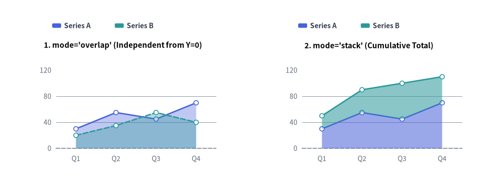
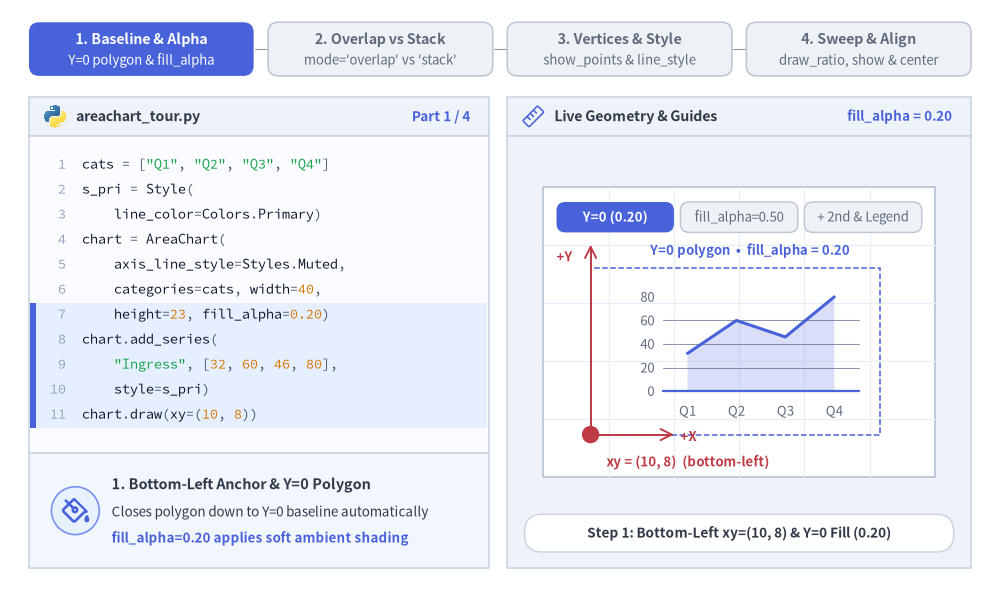
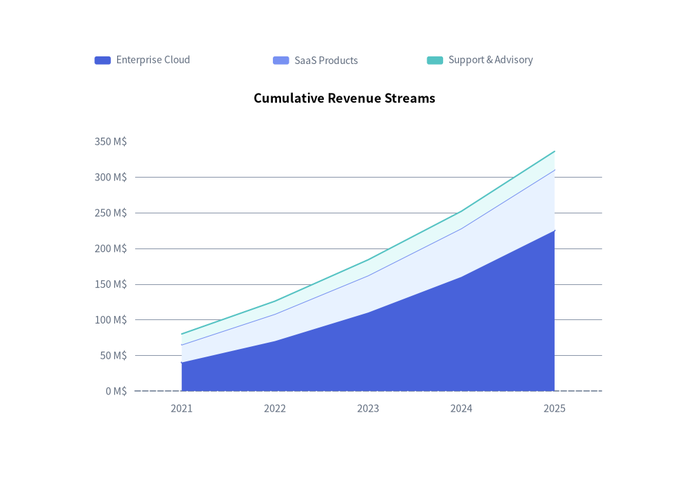
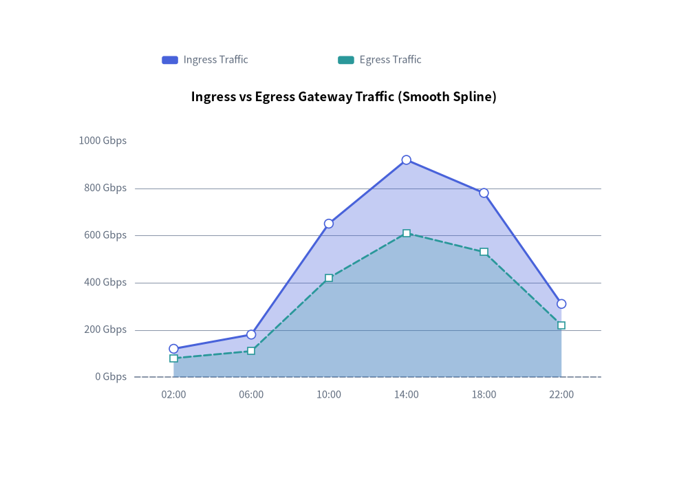

Area Chart（面グラフ）：重なり表示と積み上げボリューム
AreaChart（drawlib.charts.area）は、カテゴリ区間や時系列にわたる累積ボリューム、キャパシティ配分、連続トレンドを可視化します。データ系列の輪郭線とベースライン（Y=0）の間の幾何領域を塗りつぶすことで、全体ボリュームと各系列の寄与度の両方を際立たせます。

Source Code
from drawlib.canvas import save, setup
from drawlib.charts.area import AreaChart
from drawlib.styles import Colors, Style, Styles
setup(width=132, height=52)
categories = ["Q1", "Q2", "Q3", "Q4"]
series_a = [30.0, 55.0, 45.0, 70.0]
series_b = [20.0, 35.0, 55.0, 40.0]
s_pri = Style(line_color=Colors.Primary)
s_sec = Style(line_color=Colors.Secondary)
# Left: mode="overlap" (Independent from Y=0)
overlap_chart = AreaChart(
axis_line_style=Styles.MutedDashed,
categories=categories,
axis_text_style=Styles.Muted.patch(text_size=10.0),
grid_style=Styles.MutedThin,
width=56.0,
height=36.0,
title="1. mode='overlap' (Independent from Y=0)",
title_style=Styles.BlackBold.patch(text_size=11.0),
mode="overlap",
fill_alpha=0.35,
show_points=True,
point_shape="circle",
point_size=0.6,
)
overlap_chart.add_series("Series A", series_a, style=s_pri)
overlap_chart.add_series("Series B", series_b, style=s_sec, line_style="dashed")
overlap_chart.configure_y_axis(min_value=0, max_value=120, tick_step=40)
overlap_chart.draw(xy=(5.0, 6.0))
overlap_chart.draw_legend(xy=(14.0, 45.0), text_style=Styles.DarkBold.patch(text_size=10.0), orientation="horizontal")
# Right: mode="stack" (Cumulative Total)
stack_chart = AreaChart(
axis_line_style=Styles.MutedDashed,
categories=categories,
axis_text_style=Styles.Muted.patch(text_size=10.0),
grid_style=Styles.MutedThin,
width=56.0,
height=36.0,
title="2. mode='stack' (Cumulative Total)",
title_style=Styles.BlackBold.patch(text_size=11.0),
mode="stack",
fill_alpha=0.55,
show_points=True,
point_shape="circle",
point_size=0.6,
)
stack_chart.add_series("Series A", series_a, style=s_pri)
stack_chart.add_series("Series B", series_b, style=s_sec)
stack_chart.configure_y_axis(min_value=0, max_value=120, tick_step=40)
stack_chart.draw(xy=(71.0, 6.0))
stack_chart.draw_legend(xy=(80.0, 45.0), text_style=Styles.DarkBold.patch(text_size=10.0), orientation="horizontal")
save()
1. 基本概念と基本的な使い方
AreaChart は .add_series(...) で登録されたカテゴリ輪郭線の下部に幾何ポリゴンの面塗りを施し、デフォルトで (width, height) コンテナの左下 (x, y) を基準にアンカーします（align="center" で中央揃えも可）。ベースライン基準の独立した半透明重なり表示（mode="overlap"、fill_alpha）と累積ストリーム積み上げ表示（mode="stack"）の切り替え、頂点マーカーや破線の閾値バンドの追加、さらに Y 軸範囲を維持したままでのスイープ描画や表示／非表示の切り替えが可能です。

Source Code
from __future__ import annotations
from drawlib.anim import Animation
from drawlib.canvas import save, setup
from drawlib.charts.area import AreaChart
from drawlib.icons import code as code_icons
from drawlib.icons import phosphor
from drawlib.lines import line, lines
from drawlib.shapes import circle, rectangle
from drawlib.smartarts import SourceCode, SourceCodeStyles
from drawlib.styles import Colors, Style, Styles
from drawlib.text import text
W, H = 138.0, 82.0
setup(width=W, height=H)
anim = Animation(fps=10.0, loop=0)
CODE_TEXT_SIZE = 10.0
PT_TO_CANVAS = W / 720.0
FONT_CANVAS = CODE_TEXT_SIZE * PT_TO_CANVAS
LINE_H = FONT_CANVAS * 1.8
PAD_Y = FONT_CANVAS * 1.2
CODE_STYLES = SourceCodeStyles.get("default", font_lang="en", text_size=CODE_TEXT_SIZE).patch(
box_style=Styles.Neutral.patch(shape_fill_color=(0, 0, 0, 0), shape_line_width=0),
)
PANE_HEADER = Styles.Neutral.patch(
shape_fill_color=(238, 243, 250),
shape_line_color=(203, 213, 225),
shape_line_width=1.2,
shape_r=0.0,
)
EDITOR_BODY = Styles.Neutral.patch(
shape_fill_color=(250, 252, 255),
shape_line_color=(203, 213, 225),
shape_line_width=1.2,
shape_r=0.0,
)
TAKEAWAY_BODY = Styles.Neutral.patch(
shape_fill_color=(242, 246, 253),
shape_line_color=(203, 213, 225),
shape_line_width=1.2,
shape_r=0.0,
)
STUDIO_BODY = Styles.Neutral.patch(
shape_fill_color=(239, 243, 249),
shape_line_color=(203, 213, 225),
shape_line_width=1.2,
shape_r=0.0,
)
PART_ITEMS = [
("1. Baseline & Alpha", "Y=0 polygon & fill_alpha"),
("2. Overlap vs Stack", "mode='overlap' vs 'stack'"),
("3. Vertices & Style", "show_points & line_style"),
("4. Sweep & Align", "draw_ratio, show & center"),
]
def draw_step_bar(active_part: int) -> None:
"""Draw top 4-part progress bar (active_part is 1..4)."""
pill_w = 31.0
pill_h = 7.4
gap = 2.0
start_x = 4.0 + pill_w / 2.0
cy = 75.2
for idx, (label, sublabel) in enumerate(PART_ITEMS, start=1):
cx = start_x + (idx - 1) * (pill_w + gap)
if idx > 1:
prev_cx = cx - (pill_w + gap)
line(
(prev_cx + pill_w / 2.0 + 0.2, cy),
(cx - pill_w / 2.0 - 0.2, cy),
style=Styles.PrimaryBold if idx <= active_part else Styles.MutedThin,
)
if idx == active_part:
st = Styles.PrimaryFlat.patch(shape_r=1.4)
tst = Styles.WhiteBold.patch(text_size=10.3)
sub_tst = Styles.White.patch(text_size=9.5)
elif idx < active_part:
st = Styles.PrimaryNeutral.patch(shape_r=1.4, shape_line_width=1.1)
tst = Styles.PrimaryBold.patch(text_size=10.3)
sub_tst = Styles.Primary.patch(text_size=9.5)
else:
st = Styles.Neutral.patch(shape_r=1.4, shape_line_width=1.1)
tst = Styles.MutedBold.patch(text_size=10.3)
sub_tst = Styles.Muted.patch(text_size=9.5)
rectangle((cx, cy), width=pill_w, height=pill_h, style=st)
text((cx, cy + 1.35), label, style=tst)
text((cx, cy - 1.55), sublabel, style=sub_tst)
def draw_left_pane(
active_part: int,
code_lines: list[str],
hl_range: tuple[int, int],
icon_fn: object,
summary_title: str,
summary_line1: str,
summary_line2: str,
) -> None:
"""Draw left Python code editor + bottom concept takeaway card."""
x0, w = 4.0, 63.5
cx = x0 + w / 2.0
top_y = 63.2
header_h = 5.4
editor_h = 43.8
takeaway_h = 15.8
rectangle((cx, top_y + header_h / 2.0), width=w, height=header_h, style=PANE_HEADER)
code_icons.python((x0 + 3.6, top_y + header_h / 2.0), width=3.4, style=Styles.Neutral)
text(
(x0 + 6.5, top_y + header_h / 2.0),
"areachart_tour.py",
style=Styles.DarkBold.patch(text_size=10.2, halign="left"),
)
text(
(x0 + w - 2.6, top_y + header_h / 2.0),
f"Part {active_part} / 4",
style=Styles.PrimaryBold.patch(text_size=9.8, halign="right"),
)
rectangle((cx, top_y - editor_h / 2.0), width=w, height=editor_h, style=EDITOR_BODY)
hl_start, hl_end = hl_range
hl_top = top_y - PAD_Y - hl_start * LINE_H
hl_bot = top_y - PAD_Y - (hl_end + 1) * LINE_H
hl_cy = (hl_top + hl_bot) / 2.0
hl_h = hl_top - hl_bot
rectangle(
(cx, hl_cy),
width=w - 0.6,
height=hl_h,
style=Styles.Neutral.patch(shape_fill_color=(229, 239, 255), shape_line_width=0),
)
rectangle(
(x0 + 0.55, hl_cy),
width=0.9,
height=hl_h,
style=Styles.PrimaryFlat.patch(shape_line_width=0),
)
SourceCode.draw(
xy=(x0, top_y),
width=w,
code="\n".join(code_lines),
styles=CODE_STYLES,
code_lang="python",
show_linenum=True,
align="top_left",
)
take_cy = 3.6 + takeaway_h / 2.0
rectangle((cx, take_cy), width=w, height=takeaway_h, style=TAKEAWAY_BODY)
circle(
(x0 + 6.4, take_cy),
radius=3.3,
style=Styles.PrimaryNeutral.patch(shape_line_width=1.2),
)
icon_fn((x0 + 6.4, take_cy), width=3.8, style=Styles.PrimaryBold) # type: ignore[operator]
text(
(x0 + 11.4, take_cy + 3.6),
summary_title,
style=Styles.DarkBold.patch(text_size=10.4, halign="left"),
)
text(
(x0 + 11.4, take_cy - 0.2),
summary_line1,
style=Styles.Dark.patch(text_size=9.7, halign="left"),
)
text(
(x0 + 11.4, take_cy - 3.8),
summary_line2,
style=Styles.PrimaryBold.patch(text_size=9.6, halign="left"),
)
def draw_geometry_studio(param_badge: str, footer_caption: str) -> tuple[float, float]:
"""Draw right geometry lab shell, inner coordinate sheet with subtle grid, and footer."""
x0, w = 70.0, 64.0
cx = x0 + w / 2.0
top_y = 63.2
header_h = 5.4
body_h = 59.6
rectangle((cx, top_y + header_h / 2.0), width=w, height=header_h, style=PANE_HEADER)
phosphor.ruler((x0 + 3.6, top_y + header_h / 2.0), width=3.4, style=Styles.Primary)
text(
(x0 + 6.5, top_y + header_h / 2.0),
"Live Geometry & Guides",
style=Styles.DarkBold.patch(text_size=10.2, halign="left"),
)
text(
(x0 + w - 2.6, top_y + header_h / 2.0),
param_badge,
style=Styles.PrimaryBold.patch(text_size=9.6, halign="right"),
)
rectangle((cx, 3.6 + body_h / 2.0), width=w, height=body_h, style=STUDIO_BODY)
sheet_cx, sheet_cy = cx, 36.2
sheet_w, sheet_h = 54.0, 40.0
sx0, sy0 = sheet_cx - sheet_w / 2.0, sheet_cy - sheet_h / 2.0
rectangle(
(sheet_cx, sheet_cy),
width=sheet_w,
height=sheet_h,
style=Styles.Neutral.patch(
shape_fill_color=(255, 255, 255),
shape_line_color=(180, 194, 214),
shape_line_width=1.2,
),
)
g_st = Styles.MutedThin.patch(line_color=(232, 238, 246), line_width=0.8)
for gx in range(1, 6):
vx = sx0 + gx * (sheet_w / 6.0)
line((vx, sy0), (vx, sy0 + sheet_h), style=g_st)
for gy in range(1, 5):
vy = sy0 + gy * (sheet_h / 5.0)
line((sx0, vy), (sx0 + sheet_w, vy), style=g_st)
rectangle(
(cx, 8.4),
width=59.2,
height=5.2,
style=Styles.Neutral.patch(
shape_fill_color=(255, 255, 255),
shape_line_color=(203, 213, 225),
shape_line_width=1.1,
shape_r=2.4,
),
text=footer_caption,
text_style=Styles.DarkBold.patch(text_size=9.8),
)
return sheet_cx, sheet_cy
def draw_sub_pills(scx: float, labels: list[str], active_idx: int) -> None:
"""Draw 3-step tracker pills near the top of the studio sheet."""
pw, ph, pgap = 16.2, 4.2, 0.9
p_start = scx - (3 * pw + 2 * pgap) / 2.0 + pw / 2.0
for idx, lbl in enumerate(labels):
px = p_start + idx * (pw + pgap)
if idx == active_idx:
pst = Styles.PrimaryFlat.patch(shape_r=1.2)
ptst = Styles.WhiteBold.patch(text_size=9.5)
elif idx < active_idx:
pst = Styles.PrimaryNeutral.patch(shape_r=1.2, shape_line_width=1.0)
ptst = Styles.PrimaryBold.patch(text_size=9.5)
else:
pst = Styles.Neutral.patch(shape_r=1.2, shape_line_width=1.0)
ptst = Styles.Muted.patch(text_size=9.5)
rectangle((px, 52.0), width=pw, height=ph, style=pst, text=lbl, text_style=ptst)
CATS = ["Q1", "Q2", "Q3", "Q4"]
AXIS_TXT = Styles.Muted.patch(text_size=9.5)
S_PRI = Style(line_color=Colors.Primary)
S_SEC = Style(line_color=Colors.Secondary)
# =========================================================================
# Part 1: Baseline & Alpha — Y=0 Polygon, fill_alpha & 2nd Series Legend
# =========================================================================
ALPHA_STATES = [
(
1,
0.20,
3.3,
[
'cats = ["Q1", "Q2", "Q3", "Q4"]',
"s_pri = Style(",
" line_color=Colors.Primary)",
"chart = AreaChart(",
" axis_line_style=Styles.Muted,",
" categories=cats, width=40,",
" height=23, fill_alpha=0.20)",
"chart.add_series(",
' "Ingress", [32, 60, 46, 80],',
" style=s_pri)",
"chart.draw(xy=(10, 8))",
],
(6, 10),
"fill_alpha = 0.20",
"Step 1: Bottom-Left xy=(10, 8) & Y=0 Fill (0.20)",
"1. Bottom-Left Anchor & Y=0 Polygon",
"Closes polygon down to Y=0 baseline automatically",
"fill_alpha=0.20 applies soft ambient shading",
),
(
1,
0.50,
3.3,
[
'cats = ["Q1", "Q2", "Q3", "Q4"]',
"s_pri = Style(",
" line_color=Colors.Primary)",
"chart = AreaChart(",
" axis_line_style=Styles.Muted,",
" categories=cats, width=40,",
" height=23,",
" fill_alpha=0.50)",
"chart.add_series(",
' "Ingress", [32, 60, 46, 80],',
" style=s_pri)",
],
(7, 7),
"fill_alpha = 0.50",
"Step 2: Deepen Polygon Fill (fill_alpha=0.20 -> 0.50)",
"2. Tuning Fill Opacity (fill_alpha=0.50)",
"Higher fill_alpha deepens volume saturation",
"Line-color styles blend cleanly with fill_alpha",
),
(
2,
0.35,
3.5,
[
"chart = AreaChart(",
" ..., categories=cats,",
" width=40, height=23,",
" fill_alpha=0.35)",
'chart.add_series("Ingress", ...)',
"chart.add_series(",
' "Egress", [20, 38, 56, 42],',
" style=s_sec)",
"chart.draw(xy=(10, 8))",
"chart.draw_legend(xy=(18, 33),",
" text_style=Styles.DarkBold)",
],
(5, 10),
"draw_legend()",
"Step 3: Add 2nd Series & Decoupled Horizontal Legend",
"3. Multi-Series Volume + draw_legend()",
"Translucent 0.35 fill keeps overlapping curves clear",
"draw_legend() places swatches anywhere on canvas",
),
]
for a_idx, (n_ser, alpha_v, dur, code_a, hl_rng, badge_txt, foot_txt, s_t, s_1, s_2) in enumerate(ALPHA_STATES):
with anim.frame(duration=dur):
draw_step_bar(1)
draw_left_pane(1, code_a, hl_rng, phosphor.paint_bucket, s_t, s_1, s_2)
scx, _ = draw_geometry_studio(badge_txt, foot_txt)
draw_sub_pills(scx, ["Y=0 (0.20)", "fill_alpha=0.50", "+ 2nd & Legend"], a_idx)
cx0, cy0, cw, ch = 81.5, 22.0, 40.0, 23.0
chart = AreaChart(
axis_line_style=Styles.MutedDashed,
categories=CATS,
axis_text_style=AXIS_TXT,
grid_style=Styles.MutedThin,
width=cw,
height=ch,
fill_alpha=alpha_v,
)
chart.add_series("Ingress", [32.0, 60.0, 46.0, 80.0], style=S_PRI, line_width=2.2)
if n_ser >= 2:
chart.add_series("Egress", [20.0, 38.0, 56.0, 42.0], style=S_SEC, line_width=2.0)
chart.draw(xy=(cx0, cy0))
# Highlight Y=0 baseline inside plot
p_min_x, p_max_x, base_y = cx0 + 10.0, cx0 + cw - 3.0, cy0 + 6.0
line((p_min_x, base_y), (p_max_x, base_y), style=Styles.PrimaryBold.patch(line_width=1.6))
rectangle(
(cx0 + cw / 2.0, cy0 + ch / 2.0),
width=cw,
height=ch,
style=Styles.PrimaryDashed.patch(shape_fill_color=(0, 0, 0, 0), shape_line_width=1.1),
)
if n_ser == 1:
text(
(cx0 + cw / 2.0 + 2.0, cy0 + ch + 2.4),
f"Y=0 polygon • fill_alpha = {alpha_v:.2f}",
style=Styles.PrimaryBold.patch(text_size=9.5),
)
else:
chart.draw_legend(
xy=(90.5, 46.6),
text_style=Styles.DarkBold.patch(text_size=9.5),
orientation="horizontal",
item_gap=4.2,
)
# Bottom-Left xy anchor dot + +X / +Y Cartesian axes
line(
(cx0, cy0),
(cx0, cy0 + ch + 3.2),
arrow_head="->",
style=Styles.DangerBold.patch(line_width=1.4),
)
text((cx0 - 3.6, cy0 + ch + 1.6), "+Y", style=Styles.DangerBold.patch(text_size=9.5))
line(
(cx0, cy0),
(cx0 + 11.5, cy0),
arrow_head="->",
style=Styles.DangerBold.patch(line_width=1.4),
)
text((cx0 + 12.4, cy0 - 0.2), "+X", style=Styles.DangerBold.patch(text_size=9.5, halign="left"))
circle((cx0, cy0), radius=1.2, style=Styles.DangerFlat)
text(
(cx0 + 2.2, 18.2),
"xy = (10, 8) (bottom-left)",
style=Styles.DangerBold.patch(text_size=9.5, halign="left"),
)
# =========================================================================
# Part 2: Overlap vs Stack — mode="overlap" vs "stack" & smooth=True
# =========================================================================
MODE_STATES = [
(
"overlap",
3.3,
[
"chart = AreaChart(",
" axis_line_style=Styles.Muted,",
" categories=cats,",
" width=40, height=23,",
' mode="overlap",',
" fill_alpha=0.35)",
"chart.add_series(",
' "Cloud", [35, 60, 48, 80],',
" style=s_pri)",
"chart.add_series(",
' "SaaS", [25, 40, 68, 70], ...)',
],
(4, 5),
'mode = "overlap"',
'mode="overlap" (Default): Independent Polygons from Y=0',
'Overlapping Areas (mode="overlap")',
"Each series starts independently from Y=0 baseline",
"Translucent blend compares peer metrics directly",
),
(
"stack",
3.4,
[
"chart = AreaChart(",
" axis_line_style=Styles.Muted,",
" categories=cats,",
" width=40, height=23,",
' mode="stack",',
" fill_alpha=0.55)",
"chart.add_series(",
' "Cloud", [35, 60, 48, 80],',
" style=s_pri)",
"chart.add_series(",
' "SaaS", [25, 40, 68, 70], ...)',
],
(4, 5),
'mode = "stack"',
'mode="stack": Cumulative Stacked Volume (80 + 70 = 150)',
'Cumulative Stacked Bands (mode="stack")',
"Stacks each series directly atop preceding band",
"Shows aggregate total (150) & stream contributions",
),
(
"smooth",
3.4,
[
'm_cats = ["M1","M2","M3",',
' "M4","M5","M6"]',
"chart = AreaChart(",
" axis_line_style=Styles.Muted,",
" categories=m_cats,",
" width=40, height=23,",
' mode="stack",',
" fill_alpha=0.50,",
" smooth=True)",
'chart.add_series("Cloud", ...)',
'chart.add_series("SaaS", ...)',
],
(6, 8),
"smooth = True",
"smooth=True: Multi-Interval Stacked Stream Contours",
"Multi-Period Stream Contours (smooth=True)",
"Combines stacked bands across continuous intervals",
"Great for multi-month capacity & revenue streams",
),
]
for md_idx, (md_mode, dur, code_md, hl_rng, badge_txt, foot_txt, s_t, s_1, s_2) in enumerate(MODE_STATES):
with anim.frame(duration=dur):
draw_step_bar(2)
draw_left_pane(2, code_md, hl_rng, phosphor.stack, s_t, s_1, s_2)
scx, _ = draw_geometry_studio(badge_txt, foot_txt)
draw_sub_pills(scx, ["mode='overlap'", "mode='stack'", "smooth=True"], md_idx)
cx0, cy0, cw, ch = 81.5, 21.6, 40.0, 23.0
cats_use = ["M1", "M2", "M3", "M4", "M5", "M6"] if md_mode == "smooth" else CATS
chart = AreaChart(
axis_line_style=Styles.MutedDashed,
categories=cats_use,
axis_text_style=AXIS_TXT,
grid_style=Styles.MutedThin,
width=cw,
height=ch,
mode="overlap" if md_mode == "overlap" else "stack",
fill_alpha=0.35 if md_mode == "overlap" else (0.50 if md_mode == "smooth" else 0.55),
smooth=(md_mode == "smooth"),
)
if md_mode == "smooth":
chart.add_series("Cloud", [32.0, 48.0, 62.0, 56.0, 76.0, 90.0], style=S_PRI, line_width=2.1)
chart.add_series("SaaS", [22.0, 28.0, 36.0, 42.0, 50.0, 60.0], style=S_SEC, line_width=2.1)
else:
chart.add_series("Cloud", [35.0, 60.0, 48.0, 80.0], style=S_PRI, line_width=2.1)
chart.add_series("SaaS", [25.0, 40.0, 68.0, 70.0], style=S_SEC, line_width=2.1)
chart.draw(xy=(cx0, cy0))
chart.draw_legend(
xy=(91.5, 46.6),
text_style=Styles.DarkBold.patch(text_size=9.5),
orientation="horizontal",
item_gap=4.2,
)
if md_mode == "overlap":
text((scx, 18.2), "both polygons anchored at Y=0 (max 80)", style=Styles.DarkBold.patch(text_size=9.5))
elif md_mode == "stack":
text((scx, 18.2), "cumulative stack: 80 + 70 = 150 at Q4", style=Styles.PrimaryBold.patch(text_size=9.5))
else:
text((scx, 18.2), "6-month cumulative stream (M1..M6)", style=Styles.PrimaryBold.patch(text_size=9.5))
# =========================================================================
# Part 3: Vertices & Style — show_points, value_text_style & dashed band
# =========================================================================
VERTEX_STATES = [
(
"pts",
3.3,
[
"chart = AreaChart(",
" ..., categories=cats,",
" width=40, height=23,",
' mode="overlap",',
" show_points=True,",
' point_shape="circle",',
" point_size=0.8)",
"chart.add_series(",
' "Ingress", [22, 46, 30, 84],',
" style=s_pri)",
"chart.draw(xy=(10, 8))",
],
(4, 6),
"show_points=True",
'show_points=True: Circle Markers on Upper Contour',
"Upper Contour Markers (show_points=True)",
"AreaChart defaults to show_points=False",
'Enable "circle" or "square" to pinpoint vertices',
),
(
"labels",
3.3,
[
"chart = AreaChart(",
" ..., categories=cats,",
" width=40, height=23,",
" show_points=True,",
' point_shape="circle",',
" point_size=0.8,",
" value_text_style=(",
" Styles.DarkBold))",
"chart.add_series(",
' "Ingress", [22, 46, 30, 84],',
" style=s_pri)",
],
(6, 7),
"value_text_style",
"value_text_style: Inline Vertex Value Annotations",
"Vertex Value Annotations (value_text_style)",
"Renders formatted data values above each marker",
"Requires show_points=True and point_shape != 'none'",
),
(
"band",
3.5,
[
"chart = AreaChart(",
" ..., show_points=True,",
' point_shape="circle")',
'chart.add_series("Ingress", vals,',
" style=s_pri, fill_alpha=0.38)",
"chart.add_series(",
' "Quota", [68, 68, 68, 68],',
" style=s_sec,",
" fill_alpha=0.14,",
' line_style="dashed",',
' point_shape="none")',
],
(5, 10),
"line_style='dashed'",
'Per-Series fill_alpha=0.14 & Dashed Quota Band',
"Per-Series Alpha & Dashed Band",
"Override fill_alpha & line_style per series",
'point_shape="none" keeps Quota band clean',
),
]
for vt_idx, (vt_mode, dur, code_vt, hl_rng, badge_txt, foot_txt, s_t, s_1, s_2) in enumerate(VERTEX_STATES):
with anim.frame(duration=dur):
draw_step_bar(3)
draw_left_pane(3, code_vt, hl_rng, phosphor.dots_three_outline, s_t, s_1, s_2)
scx, _ = draw_geometry_studio(badge_txt, foot_txt)
draw_sub_pills(scx, ["Circle Vertices", "Value Labels", "Dashed Band"], vt_idx)
cx0, cy0, cw, ch = 81.5, 21.6, 40.0, 23.0
chart = AreaChart(
axis_line_style=Styles.MutedDashed,
categories=CATS,
axis_text_style=AXIS_TXT,
grid_style=Styles.MutedThin,
value_text_style=Styles.DarkBold.patch(text_size=9.5) if vt_mode == "labels" else None,
width=cw,
height=ch,
mode="overlap",
fill_alpha=0.35,
show_points=True,
point_shape="circle",
point_size=0.8,
)
chart.add_series(
"Ingress",
[22.0, 46.0, 30.0, 84.0],
style=S_PRI,
fill_alpha=0.38 if vt_mode == "band" else None,
line_width=2.2,
)
if vt_mode == "band":
chart.add_series(
"Quota",
[68.0, 68.0, 68.0, 68.0],
style=S_SEC,
fill_alpha=0.14,
line_width=2.0,
line_style="dashed",
point_shape="none",
)
chart.draw(xy=(cx0, cy0))
chart.draw_legend(
xy=(90.5 if vt_mode == "band" else 95.5, 46.6),
text_style=Styles.DarkBold.patch(text_size=9.5),
orientation="horizontal",
item_gap=4.2,
)
if vt_mode == "pts":
text((scx, 18.2), 'point_shape="circle", point_size=0.8', style=Styles.DarkBold.patch(text_size=9.5))
elif vt_mode == "labels":
text((scx, 18.2), "numeric labels above upper contour", style=Styles.PrimaryBold.patch(text_size=9.5))
else:
text(
(scx, 18.2),
'Quota: fill_alpha=0.14, line_style="dashed"',
style=Styles.PrimaryBold.patch(text_size=9.5),
)
# =========================================================================
# Part 4: Sweep & Align — draw_ratio, s2.show=False & align="center"
# =========================================================================
SWEEP_STATES = [
(
"sweep",
3.3,
[
"chart = AreaChart(..., width=40,",
' height=23, mode="overlap")',
"s1 = chart.add_series(",
' "Base", [30, 55, 45, 72],',
" style=s_pri, draw_ratio=0.6)",
"s2 = chart.add_series(",
' "Burst", [60, 115, 95, 150],',
" style=s_sec, draw_ratio=0.6)",
"",
"# Curtain sweep at 60%",
"chart.draw(xy=(10, 8))",
],
(2, 7),
"draw_ratio = 0.6",
"draw_ratio=0.6: Left-to-Right Area Curtain Reveal",
"Curtain Reveal (draw_ratio=0.6)",
"Clips shaded area polygons at 60% horizontal span",
"Smoothly unveils volume timelines from 0.0 to 1.0",
),
(
"hide_s2",
3.4,
[
"chart = AreaChart(..., width=40,",
' height=23, mode="overlap")',
"s1 = chart.add_series(",
' "Base", [30, 55, 45, 72],',
" style=s_pri)",
"s2 = chart.add_series(",
' "Burst", [60, 115, 95, 150],',
" style=s_sec)",
"# Hide s2; axis max stays 150!",
"s2.show = False",
"chart.draw(xy=(10, 8))",
],
(8, 9),
"s2.show = False",
"s2.show = False: Hides Burst & Keeps Axis Max at 150",
"Preserved Axis Bounds (.show = False)",
"Hides Burst (max 150) while keeping Y-axis at 150",
"Base volume stays true-to-scale across frames",
),
(
"center",
3.5,
[
"chart = AreaChart(",
" axis_line_style=Styles.Muted,",
" categories=cats,",
" width=40, height=23,",
' mode="overlap")',
'chart.add_series("Base", ...)',
'chart.add_series("Burst", ...)',
"# Center chart box on (cx, cy)",
"chart.draw(",
" xy=(27, 20),",
' align="center")',
],
(7, 10),
'align = "center"',
'align="center": Centers 40×23 Chart Box on xy=(cx, cy)',
'Centered Anchor (align="center")',
"Centers total (width, height) container on xy",
"Aligns AreaChart cleanly to grid or slide centers",
),
]
for sw_idx, (sw_mode, dur, code_sw, hl_rng, badge_txt, foot_txt, s_t, s_1, s_2) in enumerate(SWEEP_STATES):
with anim.frame(duration=dur):
draw_step_bar(4)
draw_left_pane(4, code_sw, hl_rng, phosphor.sliders_horizontal, s_t, s_1, s_2)
scx, _ = draw_geometry_studio(badge_txt, foot_txt)
draw_sub_pills(scx, ["draw_ratio=0.6", "s2.show = False", 'align="center"'], sw_idx)
cw, ch = 40.0, 23.0
chart = AreaChart(
axis_line_style=Styles.MutedDashed,
categories=CATS,
axis_text_style=AXIS_TXT,
grid_style=Styles.MutedThin,
width=cw,
height=ch,
mode="overlap",
fill_alpha=0.35,
)
dr = 0.6 if sw_mode == "sweep" else 1.0
chart.add_series("Base", [30.0, 55.0, 45.0, 72.0], style=S_PRI, line_width=2.1, draw_ratio=dr)
s2 = chart.add_series("Burst", [60.0, 115.0, 95.0, 150.0], style=S_SEC, line_width=2.0, draw_ratio=dr)
if sw_mode == "hide_s2":
s2.show = False
if sw_mode == "center":
cx_a, cy_a = scx, 33.8
chart.draw(xy=(cx_a, cy_a), align="center")
rectangle(
(cx_a, cy_a),
width=cw,
height=ch,
style=Styles.PrimaryDashed.patch(shape_fill_color=(0, 0, 0, 0), shape_line_width=1.2),
)
# Red center crosshair extending outside 40x23 box
line((cx_a - 22.8, cy_a), (cx_a - 20.0, cy_a), style=Styles.DangerBold.patch(line_width=1.5))
line((cx_a + 20.0, cy_a), (cx_a + 22.8, cy_a), style=Styles.DangerBold.patch(line_width=1.5))
line((cx_a, cy_a + 11.5), (cx_a, cy_a + 14.3), style=Styles.DangerBold.patch(line_width=1.5))
line((cx_a, cy_a - 14.0), (cx_a, cy_a - 11.5), style=Styles.DangerBold.patch(line_width=1.5))
circle(
(cx_a, cy_a),
radius=1.55,
style=Styles.Neutral.patch(shape_fill_color=(255, 255, 255), shape_line_width=0),
)
circle((cx_a, cy_a), radius=1.1, style=Styles.DangerFlat)
text(
(cx_a, 18.0),
'xy = (27, 20) • align="center"',
style=Styles.DangerBold.patch(text_size=9.5),
)
else:
cx0, cy0 = 81.5, 21.6
chart.draw(xy=(cx0, cy0))
p_min_x = cx0 + 10.0
p_min_y = cy0 + 6.0
plot_w = cw - 13.0
plot_h = ch - 10.0
slot_w = plot_w / 4.0
if sw_mode == "sweep":
fx = p_min_x + (0.5 + 1.8) * slot_w
line(
(fx, p_min_y - 0.6),
(fx, p_min_y + plot_h + 1.8),
style=Styles.DangerBold.patch(line_width=1.3, line_style="dashed"),
)
text(
(fx, p_min_y + plot_h + 3.2),
"draw_ratio = 0.6",
style=Styles.DangerBold.patch(text_size=9.5),
)
text(
(scx, 18.2),
"curtain sweep clips polygon & upper stroke",
style=Styles.PrimaryBold.patch(text_size=9.5),
)
else:
ghost_pts = [
(p_min_x + (i + 0.5) * slot_w, p_min_y + (v / 150.0) * plot_h)
for i, v in enumerate([60.0, 115.0, 95.0, 150.0])
]
lines(xys=ghost_pts, style=Styles.MutedDashed.patch(line_width=1.2))
text(
(cx0 + cw / 2.0 + 3.0, 46.2),
"axis max preserved at 150!",
style=Styles.PrimaryBold.patch(text_size=9.5),
)
text(
(scx, 18.2),
"Burst hidden, yet Y-axis max stays 150",
style=Styles.DarkBold.patch(text_size=9.5),
)
save()
- 左下アンカー・
Y=0ベースライン・不透明度（xy,fill_alpha,draw_legend）: デフォルトで(width, height)コンテナを左下xyにアンカーし、Y=0まで塗りつぶした面ポリゴンを設定可能なfill_alpha（0.0〜1.0）で描画し、draw_legend(...)と組み合わせます。 - 重複モードと累積積み上げモード（
mode="overlap"vs."stack",smooth）: 各系列をY=0から独立して半透明合成（fill_alpha=0.25〜0.45）するmode="overlap"（デフォルト） と、系列を累積的に積み上げるmode="stack"（オプションでsmooth=Trueの滑らかな輪郭にも対応）を使い分けられます。 - 頂点マーカー・数値ラベル・系列単位の上書き（
show_points,fill_alpha,line_style）:show_points=True（"circle"/"square"）とvalue_text_styleで上端輪郭の数値ラベルを有効化でき、系列ごとのfill_alphaやline_style="dashed"の上書きで控えめな閾値バンドも表現できます。 - カーテンスイープ・軸スケール固定の
.show・中央配置（draw_ratio,align）:draw_ratioで塗りつぶし領域を左から右へスイープ描画したり、Y 軸の最大スケールを維持したままseries.show = Falseを切り替えたり、align="center"で(cx, cy)を中心にチャートボックスを配置したりできます。
2. 累積積み上げ面グラフ
積み上げ面グラフ（mode="stack"）は、全体の合計値の推移と、時間の経過に伴う各ストリームの構成比率を同時に示すのに最適です。
from drawlib.canvas import save, setup
from drawlib.charts.area import AreaChart
from drawlib.styles import Styles
setup(width=102, height=74)
chart = AreaChart(
axis_line_style=Styles.MutedDashed,
categories=["2021", "2022", "2023", "2024", "2025"],
axis_text_style=Styles.Muted.patch(text_size=10.5),
grid_style=Styles.MutedThin,
width=82.0,
height=52.0,
title="Cumulative Revenue Streams",
title_style=Styles.BlackBold.patch(text_size=13.0),
mode="stack",
fill_alpha=0.65,
)
chart.add_series("Enterprise Cloud", [40.0, 70.0, 110.0, 160.0, 225.0], style=Styles.PrimaryFlat)
chart.add_series("SaaS Products", [25.0, 38.0, 52.0, 68.0, 85.0], style=Styles.PrimaryNeutral)
chart.add_series("Support & Advisory", [15.0, 18.0, 22.0, 24.0, 26.0], style=Styles.SecondaryNeutral)
chart.configure_y_axis(unit="M$", label="Gross Revenue (USD Millions)")
chart.draw(xy=(10.0, 10.0))
chart.draw_legend(xy=(14.0, 65.0), text_style=Styles.Muted.patch(text_size=10.0), orientation="horizontal")
save()

3. 系列ごとの不透明度・線種を組み合わせた滑らかな重複面グラフ
ネットワークの Ingress / Egress トラフィックのように同じスケールを共有する独立した指標を比較する場合は、mode="overlap" と smooth=True に、系列ごとの fill_alpha、line_style、および頂点マーカー（show_points=True）を組み合わせます。
from drawlib.canvas import save, setup
from drawlib.charts.area import AreaChart
from drawlib.styles import Colors, Style, Styles
setup(width=102, height=72)
chart = AreaChart(
axis_line_style=Styles.MutedDashed,
categories=["02:00", "06:00", "10:00", "14:00", "18:00", "22:00"],
axis_text_style=Styles.Muted.patch(text_size=10.5),
grid_style=Styles.MutedThin,
width=82.0,
height=50.0,
title="Ingress vs Egress Gateway Traffic (Smooth Spline)",
title_style=Styles.BlackBold.patch(text_size=13.0),
mode="overlap",
fill_alpha=0.35,
smooth=True,
show_points=True,
point_shape="circle",
point_size=0.65,
)
chart.add_series(
"Ingress Traffic",
[120.0, 180.0, 650.0, 920.0, 780.0, 310.0],
style=Style(line_color=Colors.Primary),
fill_alpha=0.32,
line_width=2.2,
)
chart.add_series(
"Egress Traffic",
[80.0, 110.0, 420.0, 610.0, 530.0, 220.0],
style=Style(line_color=Colors.Secondary),
fill_alpha=0.22,
line_width=2.0,
line_style="dashed",
point_shape="square",
)
chart.configure_y_axis(unit="Gbps", label="Throughput (Gbps)")
chart.draw(xy=(10.0, 10.0))
chart.draw_legend(xy=(24.0, 63.0), text_style=Styles.Muted.patch(text_size=10.5), orientation="horizontal")
save()

4. API リファレンス
コンストラクタ（AreaChart）
すべてのコンストラクタ引数はキーワード専用引数（*）です。
from drawlib.charts.area import AreaChart, Axis, DrawDirection, FormatterType, Mode, Series
chart = AreaChart(
*,
axis_line_style: Style,
categories: list[str],
width: float = 80.0,
height: float = 50.0,
mode: Mode = "overlap",
fill_alpha: float = 0.35,
show_points: bool = False,
point_shape: PointShape = "none",
point_size: float = 1.0,
smooth: bool = False,
axis_text_style: Style | None = None,
grid_style: Style | None = None,
value_text_style: Style | None = None,
background_style: Style | None = None,
title: str = "",
title_style: Style | None = None,
)
| パラメータ | 型 | デフォルト | 説明 |
|---|---|---|---|
axis_line_style |
Style |
必須 | 座標ベースラインのストロークに用いる必須アンカースタイル。 |
categories |
list[str] |
必須 | 水平 X 軸に沿った順序付きカテゴリラベル。 |
width / height |
float |
80.0 / 50.0 |
キャンバス単位でのチャート全体のバウンディングボックス寸法。 |
mode |
"overlap" | "stack" |
"overlap" |
面ポリゴンの合成モード（Mode）。 |
fill_alpha |
float |
0.35 |
面ポリゴンの塗りつぶし不透明度のデフォルト値（0.0〜1.0）。 |
show_points |
bool |
False |
上端の境界輪郭線に沿ってマーカーを描画するかどうか。 |
point_shape |
"circle" | "square" | "none" |
"none" |
show_points=True 時のデータ頂点におけるデフォルトマーカー形状。 |
point_size |
float |
1.0 |
キャンバス単位でのデフォルトのマーカー半径（四角形の場合は半幅）。 |
smooth |
bool |
False |
True の場合、上端の境界曲線および塗りつぶしポリゴンを滑らかに補間します。 |
axis_text_style |
Style | None |
None |
Y 軸目盛りラベルおよび X 軸カテゴリ名のスタイル。None の場合は省略されます。 |
grid_style |
Style | None |
None |
水平方向の Y 軸グリッド線のスタイル。None の場合は省略されます。 |
value_text_style |
Style | None |
None |
頂点マーカーの上部に描画される数値ラベルのスタイル（show_points=True かつ point_shape != "none" の場合）。 |
background_style |
Style | None |
None |
チャート外枠の背景カードのスタイル。None の場合は省略されます。 |
title |
str |
"" |
コンテナ上部に描画されるチャートタイトル文字列。 |
title_style |
Style | None |
None |
title のタイポグラフィスタイル。タイトルを描画するには必須です。 |
メソッドとプロパティ
add_series(name: str, values: list[float], style: Style, fill_alpha: float | None = None, line_width: float = 2.0, line_style: LineStyle = "solid", point_shape: PointShape | None = None, point_size: float | None = None, legend_text_style: Style | None = None, *, show: bool = True, draw_ratio: float = 1.0, draw_direction: DrawDirection = "left_to_right") -> Series: 面系列を登録し、変更可能なSeriesインスタンスを返します。fill_alpha: 系列ごとのポリゴン塗りつぶし不透明度の上書き（Noneの場合はchart.fill_alphaを継承）。line_width/line_style: 上端の境界ストロークを制御します（"solid"、"dashed"、"dotted"、"dashdot"）。point_shape/point_size: 系列ごとの頂点マーカー上書き（"circle"、"square"、"none"）。legend_text_style:draw_legend()内におけるこの系列ラベルのカスタムStyle（任意）。show、draw_ratio、draw_direction: 表示状態の切り替えおよび部分空間レンダリング制御（"left_to_right"は水平方向にスイープ、"bottom_to_top"はベースラインまたは下段の積み上げ境界から垂直方向にせり上がります）。
configure_y_axis(...) -> Axis/configure_x_axis(...) -> Axis: 垂直の数値軸または水平のカテゴリ軸を設定します。詳細は 軸・スケール・凡例 を参照してください。get_size() -> tuple[float, float]: チャートコンテナの(width, height)を返します。draw(xy: tuple[float, float] = (0.0, 0.0), *, width: float | None = None, height: float | None = None, align: Literal["bottom_left", "center"] = "bottom_left", scale: float = 1.0) -> None:xyを基準（デフォルトは"bottom_left"、または"center"）としてチャートを描画します。一時的な寸法上書きや比例scaleにも対応しています。draw_legend(xy: tuple[float, float], text_style: Style, orientation: Literal["vertical", "horizontal"] = "vertical", swatch_width: float = 2.4, swatch_height: float = 1.2, item_gap: float = 4.0, *, scale: float = 1.0) -> None: 分離配置された系列凡例をxyに描画します。- プロパティ:
chart.series -> list[Series]: 登録済みSeriesオブジェクトのコピーを返します。chart.x_axis -> Axis/chart.y_axis -> Axis: 水平軸・垂直軸のAxisインスタンスへの直接アクセスを提供します。